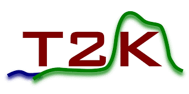
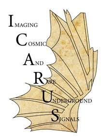
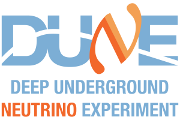

Configurable
Describe samples, parameters, likelihood choices, and minimizer behavior in structured input files.
GUNDAM · High Energy Physics
A flexible framework for neutrino data analysis.
GUNDAM is a suite of configurable applications for statistical analysis. It brings reusable fitting, uncertainty, and validation tools together so improvements made for one analysis can benefit many.
Overview
GUNDAM provides a common, configurable foundation for likelihood-based analyses. YAML and JSON inputs describe the job, allowing users to adapt an analysis without rewriting the framework for every study.
Why GUNDAM?
Analysis groups repeatedly solve the same hard problems: configuring models, propagating uncertainties, minimizing statistical objectives, validating fits, and presenting diagnostics. GUNDAM centralizes those tasks so improvements and fixes can be reviewed once and reused across analyses.
Describe samples, parameters, likelihood choices, and minimizer behavior in structured input files.
Develop new analysis components on a shared foundation instead of starting from an isolated fitter.
Keep analysis configuration alongside versioned source and input material for reproducible studies.
Let debugging and optimization performed for one use case benefit the broader user community.
Lineage and Legacy
GUNDAM began as a fork of xsllhFitter, developed by the T2K cross-section working group. It was initially developed for T2K near-detector fits and studies of the upgraded ND280 detectors, then expanded for a broader range of fitting and cross-section analyses.
Its lineage also reflects experience from the T2K BANFF near-detector beam and neutrino-flux fitter. The present project carries that experience forward in a more general, configurable framework.
Experiments
Developed in the T2K ecosystem, GUNDAM is now used by ICARUS and is actively promoted within DUNE.

Near-detector, oscillation, and cross-section analysis heritage.
Official T2K website
Configurable statistical analysis within the Short-Baseline Neutrino program.
Official ICARUS website
An emerging framework option for next-generation neutrino measurements.
Official DUNE websitePublications
Publicly available papers that use GUNDAM directly or document its statistical methods.
The first ICARUS neutrino cross-section result uses GUNDAM for fitting and cross-section extraction.
Open publicationDevelops portable likelihood surrogates and an interface to GUNDAM for high-dimensional near-detector fits.
Open publicationPosters
Posters focused on GUNDAM or analyses in which it is a central fitting framework.
An overview of GUNDAM’s architecture, performance, analysis workflow, and T2K applications.
Open posterIntroduces the framework, configuration model, performance, and early T2K analysis examples.
Open posterTalks
Public presentation material on GUNDAM and analyses that use it.
Reviews the GUNDAM and MaCh3 cross-validation of the latest T2K near-detector constraints.
Open slidesDescribes the first published ICARUS physics analysis completed with GUNDAM.
Open slidesA dedicated introduction to the fitter and its role in T2K statistical analyses.
Open talk materialsLicense
GUNDAM source files without a more specific license are distributed under the GNU Lesser General Public License, version 2.1. Consult the upstream license file before redistributing or modifying the software.